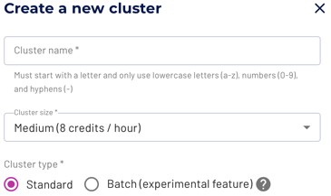

Clusters #
A cluster in Starburst Galaxy provides the resources to run queries against numerous catalogs. You can access the data exposed by the catalogs with Query editor or other clients.
Access your clusters at any time by clicking Clusters on the left hand
menu. A demo cluster is included by default.
Starburst Galaxy allows you to create, edit, delete, start, and stop clusters.
Concepts #
Creating and managing clusters is an essential task for a platform administrator in Starburst Galaxy. A cluster with the desired catalogs is required for a data consumer to use SQL statements in client tools to analyze the available data. The following concepts are important to perform this work efficiently.
Cloud provider region and catalogs #
Catalogs define the details to access a data source.
Any data source is located in a specific cloud region of a specific cloud
provider. For example, your Cloud SQL for MySQL database is hosted in the
us-east1 region of Google Cloud.
A cluster can include one or more catalogs. If multiple catalogs are configured, you can query them with SQL using the same client connection. You can also query the data in multiple catalogs within one SQL statement.
A cluster and all its configured catalogs must be located in the same cloud provider and region. This allows for maximum performance and avoids data transfer costs for access across regions or even cloud providers.
Size and scaling #
The size of a cluster determines the number of server nodes, including one coordinator and many workers, used to process queries. A larger cluster, consisting of more nodes, is capable of processing more complex queries, handle more concurrent users, and provide higher performance, by using more resources.
The available sizes include Free, X-small, Small, Medium, Large,
X-Large, and XX-Large. You can create a cluster with any size, and
change size based on the current needs. Changing size requires a restart of the
cluster. All nodes in a cluster are identical. Best practice is to start with a
smaller size cluster and determine if the cluster is capable of processing all
queries in your workload. Failures in terms of memory, or slow query processing
typically indicate that you should choose a larger size.
Clusters automatically scale the number of workers within a range from a minimum to a set maximum number of workers:
| Size | Minimum number of workers | Maximum number of workers |
|---|---|---|
Free |
1 | 1 |
X-Small |
1 | 2 |
Small |
3 | 4 |
Medium |
5 | 8 |
Large |
9 | 16 |
X-Large |
17 | 32 |
XX-Large |
33 | 64 |
Status and transitions #
Any cluster can be in one of the following three states:
- Stopped
- A stopped cluster consists of a small configuration set only. No significant resources are used, and no costs are incurred.
- Running
- A running cluster consists of a number of server nodes. It continues to be in the running state, while users are submitting queries for processing.
- Suspended
- A suspended cluster consists of a small configuration set, and a mechanism to listen to incoming user request. It does not include any actively running server nodes, and no costs are incurred.
A newly created cluster begins in the stopped state, and can be started in the list of cluster.
A running cluster can be manually stopped in the list of cluster.
A running cluster transitions to the suspended status when no user queries are processed, and the configured time for Auto suspend elapsed. When a user submits a query to a suspended cluster, the cluster is started, and the query is processed. The user has to wait for the cluster to start, which typically takes between one and five minutes.
You can also configure a cluster to Never suspend. This causes the cluster to remain up and running, even if no queries are processed and the cluster is idling. The advantage of this behavior is the fact that any issued query can be processed immediately as there is no wait time until the cluster started. The disadvantage is the increased cost incurred.
Batch mode clusters #
Enable batch mode to allow you to designate a cluster to operate with fault-tolerant execution. This allows a cluster to retry queries or parts of query processing in the event of failures without having to start the whole query from the beginning. This is especially useful for long-running queries that are typical with batch processing and Extract Transform Load (ETL) queries.
In batch mode, intermediate exchange data is spooled and can be re-used by another worker. When queries require more memory than currently available in the cluster they are still able to succeed. Multiple queries are able to share resources in a fair way, and make steady progress.
Do not use batch mode if most queries in the cluster are short-running, typically less than one minute for completion, and require smaller amounts of memory. Query processing in batch mode can be slightly slower than normal operation.
In Starburst Galaxy, you make a cluster run in batch mode with a simple cluster type selection, and with no other configuration. You can make this designation either when creating a cluster or afterwards. Revert the selection to take a cluster back to standard processing.

Fault-tolerant execution is not designed to recover from broken queries or incorrect SQL.
List of clusters #
The list of clusters is accessible by clicking Clusters on the left hand menu. It displays the following information about each cluster:
- to access a drop down of more actions:
- Query to navigate to the Query editor using the current cluster as context.
- Get connection shows details to use to connect clients to the cluster.
- Stop to stop the cluster.
- Edit cluster to edit the cluster.
- Change owner to change the owner of the cluster to a different role.
- Open to navigate to the Trino Web UI to analyze the cluster.
- Delete cluster to delete the cluster.
- Name of the cluster, used to identify a cluster in the user interface as well as in the connection string for clients.
- Status includes the current status as well as buttons to change the status including Stop and Start.
- Quick actions show buttons for varying operations, depending on the cluster status.
- Catalogs lists the configured catalogs used in the cluster.
- Size displays the configured cluster size.
- Auto suspend displays the configured time for an inactive cluster to transition to suspended status.
- to edit the cluster.
Create a cluster #
Make sure that you have configured the desired catalogs to avoid restarts before creating a cluster. Use the Create cluster button above the list of clusters and proceed with the following steps:
- Set the Cluster name to a meaningful name for users.
-
Configure the Cluster size from the available sizes.
- Select between Standard and Batch cluster type.
- Configure the Idle shutdown time to enable automatically suspending the inactive or choose Never suspend.
- Add one or more Catalogs to provide access to the configured data sources to users in this cluster. The catalogs all needs to be using the same cloud provider and region as the cluster itself.
- Choose the Cloud provider region to use for deploying and running the cluster.
- Decide on the roles to grant access to the cluster and configure access with Grant access to with role(s).
- Click Create cluster to save the configuration to the list of clusters as a stopped cluster.
If desired, proceed to start the cluster.
Start a cluster #
Use the Start button in the list of clusters.
Stop a cluster #
Use the Stop button in the list of clusters. You need to stop a cluster to be able to delete it.
Edit a cluster #
Use the Edit cluster option available with the button, or the button in the list of clusters to access the edit view.
You can change the configuration of a cluster without affecting your users and any running queries. Many changes, such as adding catalogs, changing size, or changing cloud region, require a new cluster.
Use the Update button in the list of clusters to apply the configuration changes. The new cluster is created transparently and new queries are transferred to it as soon as it is ready. At the same time running queries continue to operate and complete on the existing cluster.
Delete a cluster #
Before you can delete a cluster, you must stop it in the list of clusters. Once stopped, you can delete the cluster with the Delete cluster option in the drop down from the list. Alternatively, you can access the edit view for the cluster and use the Delete cluster button at the bottom of the view.
Is the information on this page helpful?
Yes
No
Is the information on this page helpful?
Yes
No